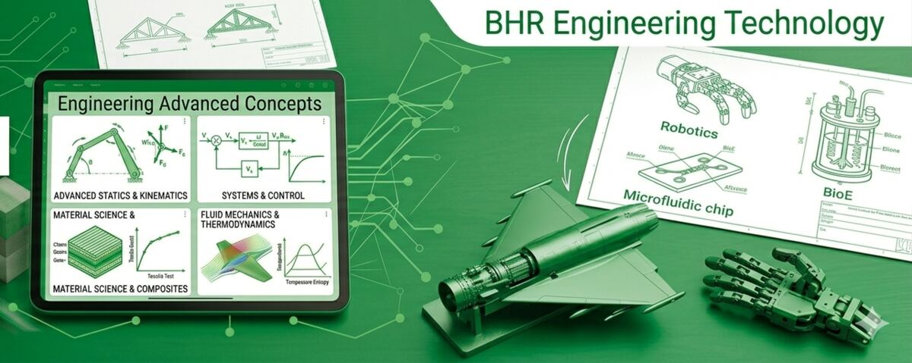

Grade 11 · Engineering III
Engineering III
Delivered by Mr. Frank
Grade 11 is the widest year. Projects run all four terms and cover every pathway in the shop — speakers, houses, robots, circuits, architecture — before the capstone at the end.
The units this year
The frame the assignments hang on.
1Review, Acclimation & Higher Expectations Prep
2Roles of an Engineer & Professional Management
4Advanced Manufacturing & DFM Theory
5Junior Capstone: Architectural Design
6Year-End Wrap-Up & Portfolio Prep
Term 1
5 entries
Speaker Design
Wk 1
Project
A custom casing for a Bluetooth speaker, designed around the components that have to fit inside it.
The first project of the year, and it is a warm-up on purpose — it puts the whole design process back in your hands after the summer.
It is not just a nice-looking box. You are designing for the components: how the speaker, the battery and the circuit board are held, and how the whole thing goes together.
What you hand in
- At least two distinct concepts, sketched on paper first
- A Fusion 360 model of the concept you chose
- A parts list of the reference components — speakers, power connectors, PCB
- The voltage requirement of your speaker, and a battery that matches it
- A prototype, if there is time and the design is approved
The safety test and acknowledgement are in this same week. Nothing gets built before they are done.
Roles of an Engineer
Wk 2
Skills
Short written descriptions of all seven engineering roles.
Write a short description of each of the seven Roles of an Engineer in a Google Doc, using the slide deck as your base. Chapter 2 of the Engineering Fundamentals book covers the same ground.
What you hand in
- One Google Doc, seven roles described
This is the setup for the Full Scope Project. Those seven roles are the roles you then have to work in.
Full Scope Project: Vision Statement
Wk 2
Project
The brief for your own theme park, written before you design any of it.
A short vision statement describing what your theme park will be like. It gives the seven engineering roles something concrete to act on.
What you hand in
- Theme — the central story of the park
- Experience — how you want visitors to feel
- Unique features — what makes it different
- Target audience — who it is for
Full Scope Project, Weeks 1–3
Wk 2–4
Project
Three weeks working as a different kind of engineer each week, with a real deliverable for each role.
You choose a new role — or more than one — each week and produce what a professional in that field would actually produce. Some weeks you will have to take two roles, so think about which ones pair well.
Monday: submit your Weekly Planner. Friday: submit your Project Reflection with all project files.
What you hand in
- Design Engineer — a drawing set or a CAD model
- Research Engineer — research and a prediction about a new use for an existing item
- Development Engineer — a model or a prototype
- Production & Construction — a Work Breakdown Structure and a Gantt chart
- Operations Engineer — a large-scale system design with operational notes
- Sales Engineer — a marketing piece that sells the engineering behind the product
- Management Engineer — an imaginary team with tasks assigned to each person
The three weekly assignments carry identical instructions. Only the role you pick changes.
Tiny House — Fusion 360
Wk 3
Project
A tiny house modelled in Fusion 360.
Listed in Classroom without a written brief. Ask Mr. Frank for the requirements.
Term 2
7 entries
ADU Design Project
Wk 1
Project
A 3D model of an Accessory Dwelling Unit, under the Massachusetts Affordable Homes Act.
Massachusetts now lets homeowners in single-family zones build one ADU by right. That is a real market for small, affordable housing, and you are the design engineer for one.
Phase 1 — ideation and research. Define your ADU, then sketch several conceptual floor plans (studio, one-bedroom, lofted) and pick one on space use, rough material cost, and MA ADU compliance.
Phase 2 — modelling and documentation. Build the full model, then generate the drawings from it.
Phase 3 — reflection. Keep the Daily Journal Log running the whole way, including what went wrong in Fusion and how you got out of it.
What you hand in
- ADU type — detached new build, garage conversion, or attached addition
- Target size — the exact square footage, which must be 900 sq ft or under
- Target user — who actually lives in it
- A complete Fusion 360 model showing kitchen, bath, sleeping area, walls, roof, windows and doors
- A dimensioned floor plan, labelled, with the separate entrance shown
- An elevation view of one exterior side
Runs with a Mid-Project Design Review and Feasibility Check.
Intro to ESEC: Arduino
Wk 2
Course
The Arduino Education Starter course — ten lessons that build from nothing to working circuits and code.
Each lesson builds on the one before and gives you a chance to apply what the last one taught. The course has its own logbook, which you fill in as you go and submit at the end.
Sign up through the under-18 route at app.arduino.cc/minors. The class code and activation code are in Classroom — they are not published here.
What you hand in
- The completed student logbook
- The Arduino reflection assignment
VEX V5 Clawbot Project
Wk 3
Project
Build the Clawbot, program it, then document the whole thing as one professional project record.
Build the VEX V5 Clawbot from the provided guides. Once it works, go through the Play, Apply, Rethink and Know sections on the VEX site, documenting everything as you go.
This one is explicitly about proving Documentation, Technical Knowledge and Analysis — three of the shop’s core concepts — not just about getting a robot moving.
What you hand in
- Log book — the build, the problems, and the fixes you actually applied
- Major part list (BOM) — a real table with port numbers and a function for every part
- Code and annotations — screenshots of your VEX code, annotated to explain what each block and variable is for
- Modification justification — what you changed, tied to a specific weakness you saw during testing
Intro to CorelDraw
Wk 3
Skills
A day of teaching yourself CorelDraw, with something to show for it.
A short intro, then independent learning. Work with classmates and get their feedback. By the end of the day, upload whatever shows you got there — files, images, screenshots, written descriptions.
What you hand in
- A beginner tutorial, completed
- A full walkthrough of making something, completed
- Something of your own, built around a new skill from a video
- Whatever else you make with the time left
Simple Machines to Functional Mechanisms
Wk 4
Project
A handheld mechanism that comes off the printer already moving.
You move from digital designer to mechanical engineer here. The real test is the physical gap: the tolerance that lets printed plastic parts move against each other instead of fusing solid.
Part 1 — the digital foundation. Model and animate two different simple machines of your choice, each with working joints (revolute, slider, and so on).
Part 2 — the mechanism. Design one mechanical fidget or mechanism sandbox: something you hold and interact with, using at least two simple machines together. A coin vending fidget or a rack-and-pinion slider are the kind of thing.
What you hand in
- Three renders — one per simple machine, one for the mechanism
- Animation exports showing all three in motion
- A motion link, so moving the input moves the outputs
- A printed prototype that moves freely without being forced
Leave a tolerance gap between all moving parts — 0.3 mm is the suggested figure. If the parts touch in Fusion, they come off the printer stuck together permanently.
Robotic Arm Build
Wk 5
Project
A robotic arm cut on the engraver, prototyped in cardboard first.
Follow the video to design the arm. Start with a cardboard prototype; the finished product is wood. The engraver needs 2D drawings of the parts.
What you hand in
- A cardboard prototype
- 2D part drawings for the engraver
- The finished arm in wood
- Orthographic drawings of the final product
Elegoo Uno Project Kit
Wk 5
Course
Every tutorial in the kit, worked through as a class.
Document the project in a Google Doc as you go — pictures, screenshots, and writing about what you did.
What you hand in
- One documented Google Doc
Term 3
5 entries
Fusion 360 Animation
Wk 1
Project
An animation of an assembly in Fusion 360.
Listed in Classroom with a reflection but no written brief. Ask Mr. Frank for the requirements.
Client Desk Organizer
Wk 1
Project
A desk organiser designed to a client brief.
Listed in Classroom with a Mid-Project Design Review but no written brief. Ask Mr. Frank for the requirements.
Creative Concept Design
Wk 2
Project
One day, no constraints, and a high bar.
You have the floor, the tools and total creative freedom. Design, model and refine anything you can think of in a professional CAD program.
There are no requirements for what you build. There are expectations for how you build it: intricate detail, moving parts, or structure that would actually stand up.
What you hand in
- One model that genuinely filled the day
Use the advanced tools — lofts, sweeps, patterns, parameters, architectural families. Not Lego-style building. If it looks like twenty minutes of work, it was.
City Design
Wk 3–4
Project
The whole class as one firm, designing and printing a modern city that has to fit together.
Phase 1 — the master plan. The class acts as the urban planning board. Pick a real or fictional site in Autodesk Forma, run its analysis for sun hours, wind and noise, and let that data decide where green space goes and where the high-rises go. Then zone the city and assign each student a zone.
Phase 2 — the infrastructure standard. The class agrees one connection standard so a building designed by one student fits the road designed by another: block size, the four-sided connection system, and the exact sidewalk height and road width.
Phase 3 — architecture. Each student models onto a copy of the master base tile, using the Forma data to justify the design, and builds at least one high-detail featured building.
Phase 4 — production. Simple massing prints for the background, high detail for the featured buildings, all clicked into the master layout on the classroom table.
What you hand in
- One digital master site plan
- One physical scale model
- Named roles: Project Manager holds the Forma master file and the deadlines; Infrastructure Lead prints the road and park tiles everyone connects to; Zoning Leads for residential, commercial and industrial
This is the closest thing in the course to how a real firm works — one shared master file, an agreed interface standard, and named responsibility.
Learning Revit!
Wk 4
Course
The Revit certification-prep course on the Autodesk Learning Portal, at your own pace, logged as you go.
This moves you into BIM — Building Information Modeling — through the Revit for Architectural Design Professional Certification Prep course.
You manage your own pace. Credit comes from the progress log, not from finishing fast.
What you hand in
- Module title for every lesson or exercise completed
- Evidence — a screenshot of the finished model, the lesson-complete check, or your quiz result
- Technical reflection — the tool you used and how it applies to a real building project
Term 4
4 entries
Famous Architect Presentation
Wk 1
Project
A three to five minute presentation on one architect.
Pick an architect and present their life and work. Show both conceptual and detail design work alongside real photographs, and include biographical information.
What you hand in
- A 3–5 minute presentation
Bridge Conceptual Design Model
Wk 1
Project
A conceptual bridge model, with a reflection.
Listed in Classroom with a reflection but no written brief. Ask Mr. Frank for the requirements.
Fusion Review: Drawings and Stress Simulations
Wk 3
Skills
Two review materials on the Fusion features that matter most for the capstone.
Both are attachment-only in Classroom — the drawings review and the stress simulation review.
The End-of-Year Vibecoding Team Challenge
Wk 5
Project
Four days for a team to design, build and pitch an app or game, with the AI writing the code.
You are Tech Directors and Creative Founders for a week. Gemini does the syntax; your team owns the vision, the user experience, the logic and the pitch. Pick something you actually want to use or play.
Days 1–2 — vision and business strategy. Establish the product identity and draft a one-page business plan: audience, features, marketing angle.
Days 3–4 — the hackathon. Generate the prototype, piece it together, test it, direct the changes. When it breaks, paste the error back in and say where it broke.
Day 5 — the pitch. Business plan and code demo, in one punchy deck.
What you hand in
- Product Owner — directs the AI on the core vision and owns the user experience
- Lead Systems Engineer — takes and refines the generated code
- Go-To-Market Specialist — strategy, marketing, financial feasibility
- Creative Director — visual design and the pitch deck
- Submitted as one launch package: a working prototype, a one-page business summary, and the slide deck
The prototype only has to work at a basic level. The grade is in the thinking and the pitch, not the syntax.
End of year
3 entries
Grade 11 Capstone
Capstone
Project
Two projects at once: one that proves engineering logic, one that sells a professional vision.
The capstone asks you to show what you understand about civil engineering and architecture by running two distinct projects simultaneously.
Project 1 — a unique concept. Develop an original structure that stretches traditional design — an upside-down building, an integrated vertical ecosystem — and then prove it is physically and logically viable. Look at your own design through an engineer’s eyes and justify why it works.
What you hand in
- Engineering Logic Report — documented research on similar structures or the scientific principles that support your concept
- Structural Analysis — simulation and test methods, in Fusion 360 or equivalent
Runs over four weeks: conceptual design, detailed design, then two weeks of proof.
Reflection Portfolio Presentation
Final
Reflection
Your whole year, compiled into one presentation.
Compile your assignments from the year into a single Google Slides presentation. Take screenshots from the assignments and your daily journals, and put them next to a reflection on what you got out of them.
You are not expected to reflect on every single assignment. Pick several for real depth, or group them — all the Do Nows together, say — and reflect on the group. Finish with a reflection on the whole year.
What you hand in
- One professional, clean, templated deck
- Last year’s presentation, found and uploaded alongside it
"Go back and find last year’s presentation" is only a reasonable instruction if last year’s work is still somewhere you can find it. Keep your portfolio where you can get at it.
Tools Google Slides
Gmetrix
Final
Admin
Certification practice, ahead of the real exam.
Create an account and join the class. The join code is in Classroom.
Tools Gmetrix
Running all year
1 entry
Independent Study Project
All year
Project
A year-long project in whatever part of engineering actually interests you.
This is the one you run at your own pace, treated like a personal engineering hobby. It breaks into three areas, which can all serve one big idea or stay completely separate.
Research — a deep dive into a concept, theory or process that sparks your curiosity, using reputable sources, ending in its real-world applications.
Design — a new product or solution, standalone or part of something bigger. An ergonomic desk organiser, a custom phone case.
Development — take something that already exists and fix, modify or improve it.
What you hand in
- A weekly journal — findings, learnings, problems. Sketches, notes and video logs all count
- Mid-year and end-of-year reflections for each project
If you have no idea yet, build a skill tree in these areas so you are ready when an idea does strike. That is exactly what the seven pathway guides are for.
This is the reference copy, not the gradebook. What is due, and when, lives in Google Classroom. This page is here so that a brief you half remember from November is still findable in April — and so you can read next term before you get there.
Wherever you are in the shop